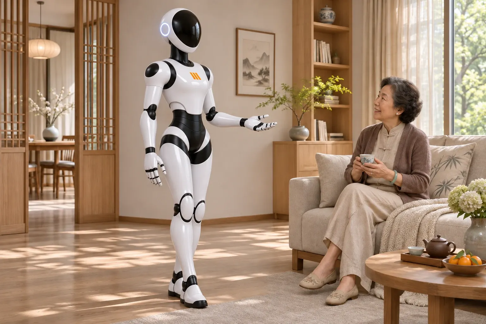
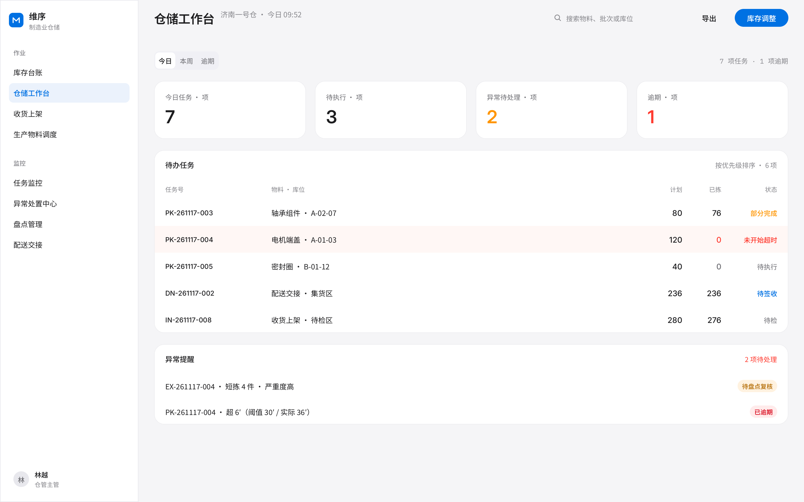
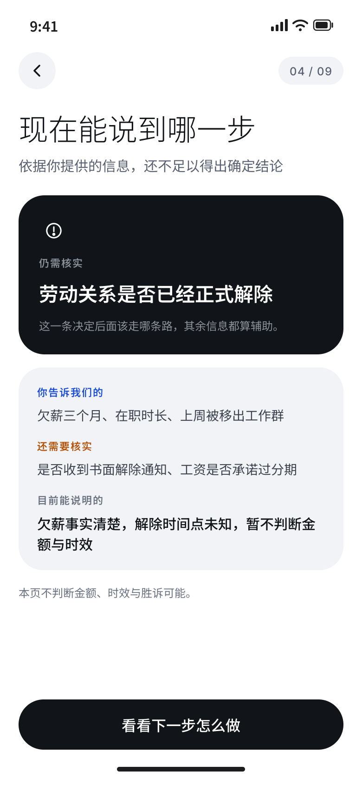

六个项目，覆盖家庭照护、法律 AI、仓储作业、车载音响和家用充电。五个是概念稿，一个是真实 App 的改版。

家庭照护机器人
把老人看得见的状态、听得懂的一句话，放到投屏上。
AI · 合同审查
AI 指出风险，法务回到原文核对，再交给复核人。
B 端 · 仓储作业
管住 4 件差异：谁发现的、谁核的、谁批的。

车载 HMI · 声音交互
声音被谁改了、改的哪一块、还回不回得来。
C 端 · 法律信息服务
先把事实理清，再决定要不要找律师。

智能硬件 · 家用充电
一个真实 App 的改版：插枪到结算，一屏一件事。
2027 届毕业生，求职 UX / 交互设计实习。